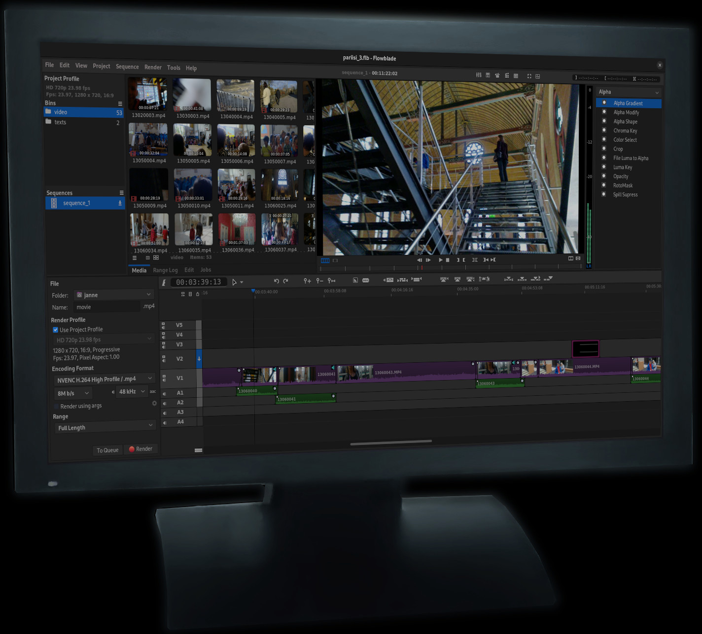

Free & Libre Video Editor
Flowblade is a multitrack non-linear video editor released under GPL3 license. From beginners to masters, Flowblade helps make your vision a reality of image and sound.
Flowblade supports all the media that in general can be accessed in a Linux system when the FFMPEG library is working as the backend. Typical startup message on terminal tells that 146 formats, 78 video codecs and 58 audio codecs are available to be used.
A set of industry standard editing tools and configurable workflow make adding, moving and trimming clips a breeze.
Combine and mix images and audio with the powerful tools available. Color correct image to suit your vision and modify audio to get the mood you wish to express.
G'MIC is powerful open source image filtering technology that Flowblade makes easily available with a dedicated tool. See demo video.

"I found flowblade and I love it. I edit movies 2 to 3 hours in length with many video clips. What is a great help is the way the clips snap together, especially when I am deleting and editing out bad video and moving video around.", dnsXXXXX
"We - that is a group of German students and me - are currently shooting a movie for a school project, and after trying a few solutions we ended up choosing Flowblade.",".. From then it worked well - no more crashes! A lot of filters I actually thought flowblade was simply lacking are available now. Thank you for your support - Flowblade rocks!", R.W, Germany
"I'm a professional video editor and director who is working from more than 15 years for the main broadcasters here in Italy...[Flowblade is] already showing it's great potential because it looks like it has been thought by someone who knows what editors need for real.", M.S, Italy